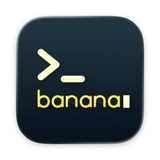
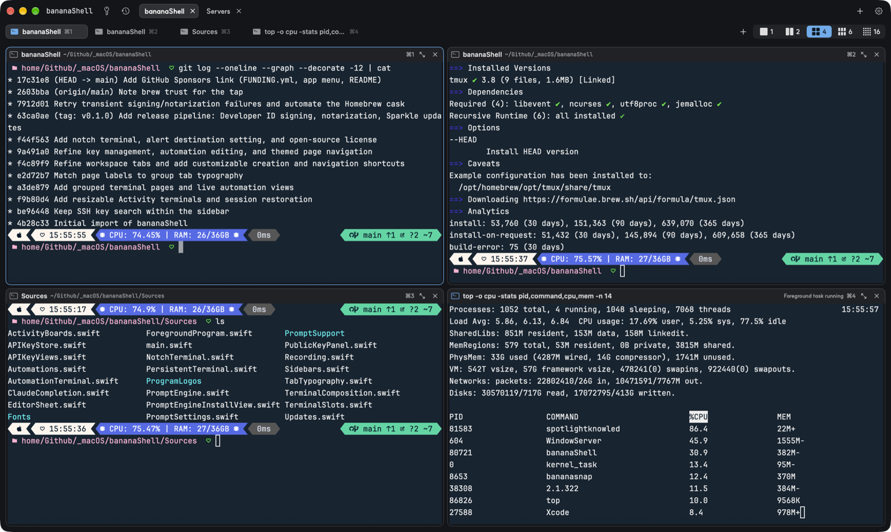

Terminal / Mac
bananaShell
Your terminals keep running.
A Mac terminal whose sessions survive quitting the app. Grid layouts, a drop-down notch terminal, and alerts when Claude Code finishes.
Download for Mac ↗Or install with Homebrewbrew install --cask howon-kim/tap/bananashell

01
Sessions that outlast the app
02
Up to 16 terminals on one page
03
A terminal from the notch, anywhere
A closer look.
Scroll to explore. Select a screenshot to take a closer look.